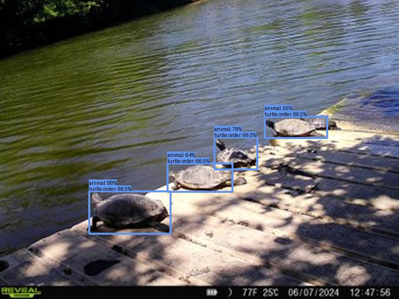
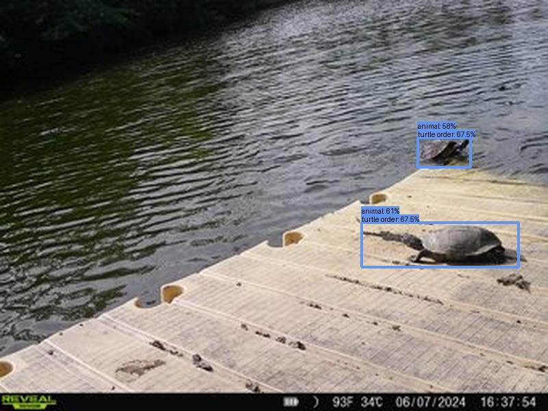
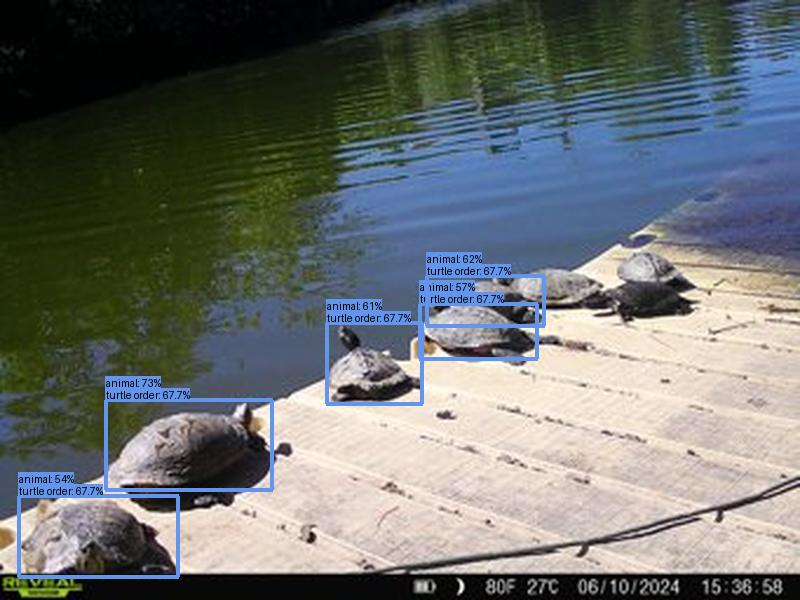
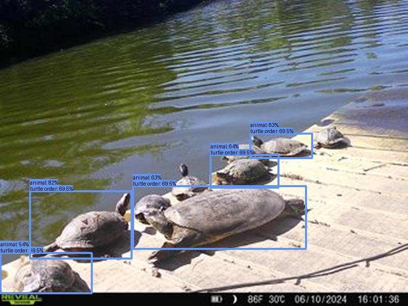
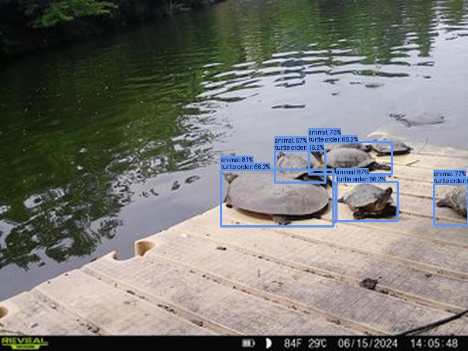

Result type: detections_animal, image: images/batch_0/2024-06-27_UR011--SYFW1984.JPG, max conf: 0.910
Result type: detections_animal, image: images/batch_0/2024-06-27_UR011--SYFW2662.JPG, max conf: 0.881
Result type: detections_animal, image: images/batch_0/2024-06-27_UR011--SYFW3027.JPG, max conf: 0.613
Result type: detections_animal, image: images/batch_0/2024-06-27_UR011--SYFW4804.JPG, max conf: 0.728
Result type: detections_animal, image: images/batch_0/2024-06-27_UR011--SYFW4860.JPG, max conf: 0.823
Result type: detections_animal, image: images/batch_0/2024-06-27_UR011--SYFW7347.JPG, max conf: 0.869
Result type: detections_animal, image: images/batch_1/2024-06-27_UR011--SYFW8504.JPG, max conf: 0.938

Result type: detections_animal, image: images/batch_1/2024-06-27_UR011--SYFW9262.JPG, max conf: 0.818